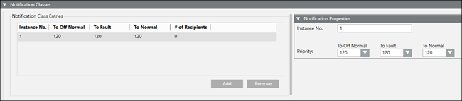
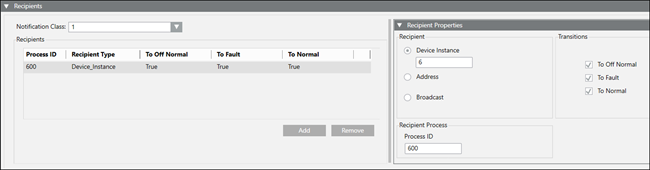

Create a Notification Class and Recipients
- Select Project > Management System > Servers > Main Server > BACnet Server > [device].
- Click the BACnet Server tab.
- Expand the Notification Classes section.
- Click Add, and the select the newly added row.
- The Notification Properties section expands and displays default settings.

- (Optional) Modify the Instance No. and Priority for the various alarm states.
- Expand the Recipients section.
- Click Add, and then select the newly added row.
- The Recipient Properties section expands and displays default settings.

- Accept the defaults, or modify the settings as needed.
- Repeat Steps 7–8 to add more recipients to this Notification Class.
- Click Save
 .
.